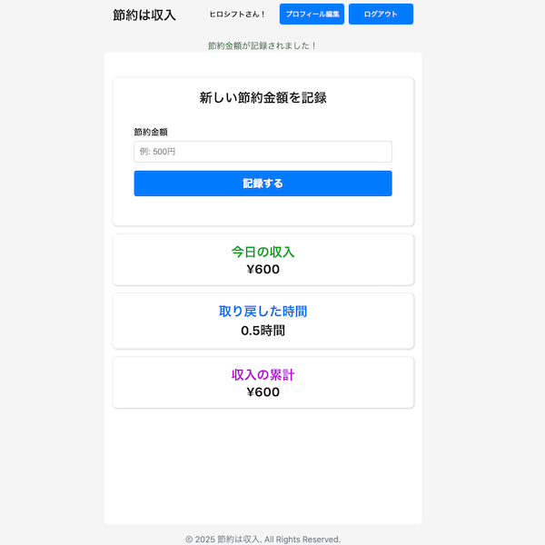
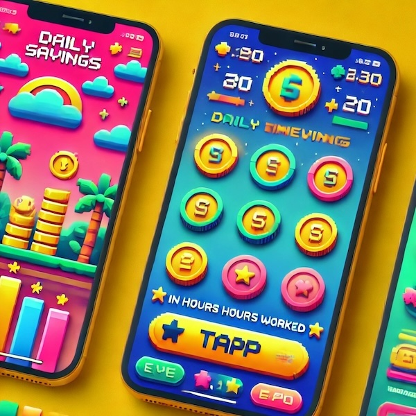

節約は収入

開発環境
Ruby / Ruby on Rails / MySQL / GitHub / Heroku / Visual Studio Code / Trello
-
概要
制作時間 70時間 URL https://setsuyaku-income.onrender.com/ ID s_admin PASS s_1537 -
動作テスト
テスト用アカウント
mail test@test.com PASS setsuyaku1234
OUTLINEアプリケーションの概要
「節約は収入」は、「時間を取り戻す」 ことを目的としたWebアプリです。
私たちが得た収入は、日々の無意識な支出によって消えてしまいがちです。このアプリは、節約した金額を「収入」と捉え、さらにそれを「取り戻した時間」として可視化します。
例えば、1,000円の節約が「あなたの1時間の労働に相当する価値」であると認識することで、節約の価値を直感的に理解できます。従来の家計簿アプリとは異なり、節約をポジティブに捉え直し、習慣化をサポートする設計になっています。
また、節約した時間をどう活用するか？ という視点を持たせることで、単なる支出管理に留まらず、自己成長や目標達成のためのリソースとして活用できる仕組みを提供します。
今後は、目標設定機能、AI提案機能、コミュニティ機能を追加し、より実用的な節約習慣の定着を支援するアプリへと進化させていきます。
-
開発に至った経緯
日々の生活の中で、私は無意識な支出が積み重なり、自由に使えるはずのお金や時間が目減りしていくことに気づきました。しかし、節約の成果はすぐには実感しづらく、モチベーションを維持するのが難しいという課題がありました。
この課題を解決する方法を考えた結果、節約の意義が「お金を減らさないこと」だけでなく、「未来の選択肢を広げること」にあると気づきました。
節約は単なる支出の抑制ではなく、より大切なことに時間とお金を使うための手段として機能すべきです。そこで、節約の価値を実感しやすくし、簡単に継続できる仕組みを作ることを目指し、このアプリを開発しました。
-
開発で工夫したこと
1つ目が節約額を「時間」に換算し、ユーザーの意識改革を促す仕組みです。「節約=収入」としてポジティブに表示し、さらに金額ではなく「時間の価値」を意識させる設計にしました。
2つ目がスマートフォンでの使いやすさを考慮したUIデザインです。「スマホで見やすい」「タップしやすい」をテーマに設計し、シンプルで直感的な操作を実現しました。
開発時には、実際の使用シーンを想定しながらUI/UXを設計し、直感的に操作できることを重視しました。特に、入力の簡略化、少ない操作で節約記録ができるよう設計しました。
-
今後実装したいと思っていること
1つ目がAIアシスタントの導入です。ユーザーの節約データを分析し、最適なアドバイスを提供できるようにします。節約の傾向や支出パターンを学習し、より具体的なアドバイスをリアルタイムで受け取ることが可能になります。
2つ目が目標設定機能の追加です。「旅行のために3万円貯める」「毎月1万円節約する」などの目標を設定し、進捗を可視化します。目標達成時には通知を出し、達成感を強化します。
3つ目がUIの大幅改善です。ポップで直感的なデザインを採用し、ゲーム感覚で楽しめるアプリを目指します。